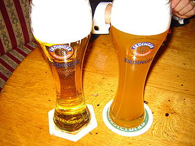
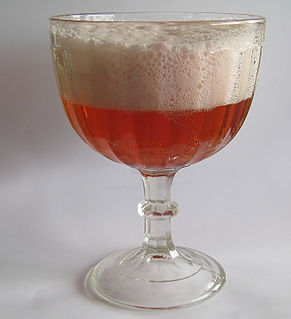
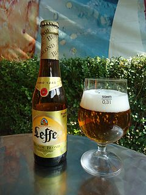
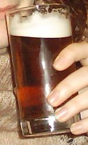
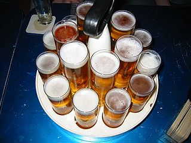
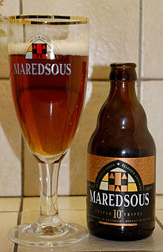
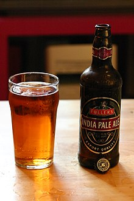
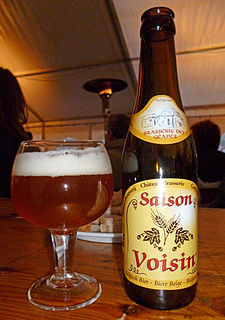
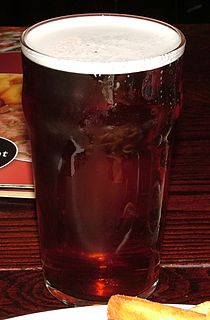

Виды пива

Пшеничное пиво имеет банановый пряный вкус, что обусловлено значительным содержанием эфиров, возникающих за счет высоких температур брожения.
На вкус и аромат пшеничного пива прежде всего влияют такие вещества, как изоамилацетат и 4-винил гваякол.
Пшеничное пиво особенно распространено в Баварии и Южной Германии.

Берлинер Вайссе (нем. Berliner Weiße) — разновидность кислого пива. В начале XIX века берлинский пивовар добавил к пиву травы. Позже добавление трав было заменено добавкой сиропа из подмаренника душистого или малины. Добавляется сироп или сразу при производстве или позже, отдельно. Во втором случае сначала наливают сироп, примерно 20 миллилитров, а потом бутылку 0,33 литра белого пива.

Блонд эль относительно новая разработка бельгийских пивоваров для привлечения внимания потребителей европейского пильзнера в последние десятилетия становится всё более популярной на мировом рынке.
По крепости напоминает дуббель, по характеру бельгийский крепкий золотой эль и триппель, но слаще и менее горький.

Светлый эль. Обычно под обозначением Pale понимают светлую окраску какого-либо пива, а в случае с элем — некое светлое пиво, полученное методом верхового
брожения и содержащее небольшое количество углекислоты. В данном случае это не совсем верно: применительно к этому пиву понятие
Pale возникло для отличия сортов, производимых в городе Бертон-апон-Трент, от тёмного портера (Porter) и ещё более тёмного стаута
(Stout) — по сравнению с последними двумя, пиво цвета бронзы или даже меди кажется светлым.

Кёльш (нем. Kölsch) — название специального светлого пива, которое варится в городе Кёльне.
Это пиво верхового брожения имеет слегка горький вкус, чувствуется хмель. Содержание алкоголя 4,8 %.
Какое пиво имеет право называться Кёльш, определено в «Конвенции кёльш» (Kölsch-Konvention[de]). В 1997 Кёльш Евросоюзом был принят в число защищённых региональных сортов.
Кёльш пьют из специальных стаканов (Kölner Stange[de]) вместимостью 0,2 литра

Трипель (тройной эль) — термин, используемый траппистскими и аббатскими пивоварнями для обозначения своих самых крепких сортов пива.
Этот стиль был разработан в 1930 году в бельгийском аббатстве Вестмале. Пивоварня выпустила первый трипель под названием Superbier («суперпиво») в 1934 году.
В 1956 году рецепт модифицирует, добавив больше хмеля, брат Томас, главный пивовар Вестмале, и пиво меняет название на трипель. В таком виде оно остается практически неизменным по сей день.

Индийский пейл-эль (India Pale Ale, сокращ. IPA, что значит «индийский бледный эль») — сильно охмеленная разновидность пейл-эля
(устар. пель-эль). Хмель придаёт пиву богатый аромат и приятную горечь. Это наиболее востребованный стиль крафтового пива в США

Сезонный эль. Сезонное пиво, также сэзон (фр. Saison) — сезонное летнее бельгийское пиво, тип эля, традиционно производившийся в Валлонии,
франкоязычной части Бельгии. В настоящее время благодаря развитию крафтового пивоварения варится повсеместно. Французский аналог сэзона называется бьер-де-гард.

Биттер (в переводе с англ. Bitter — «горький») — английский горький эль, сорт светлого эля.
Хотя с английского и немецкого языков Bitter переводится как «горький», на самом деле этот эль имеет очень приятный вкус.
Свое название он приобрел несколько веков назад, когда английские пивовары стали использовать хмель, придающий пиву горьковатый привкус.
Типичный горький эль имеет цвет тёмной меди, хотя у некоторых специальных сортов оттенок варьируется от янтарного до бронзового.
Характерная крепость — от 3% до 7%
Подняться НАВЕРХ